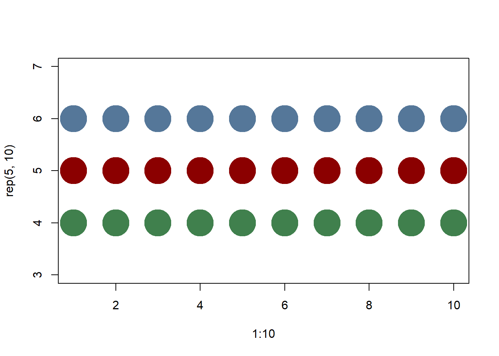
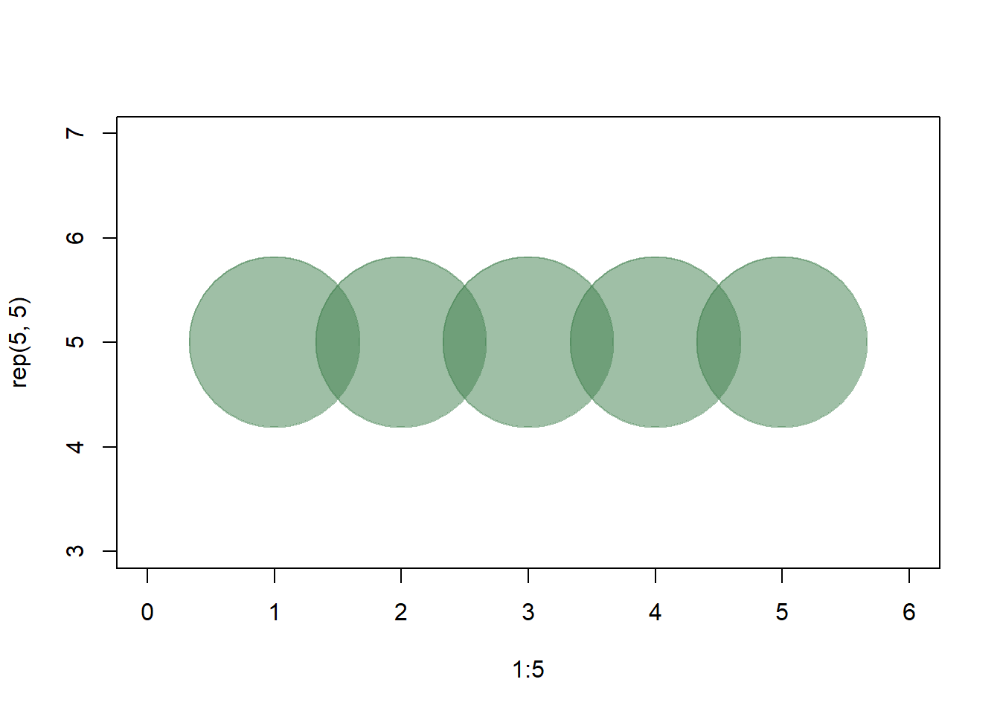
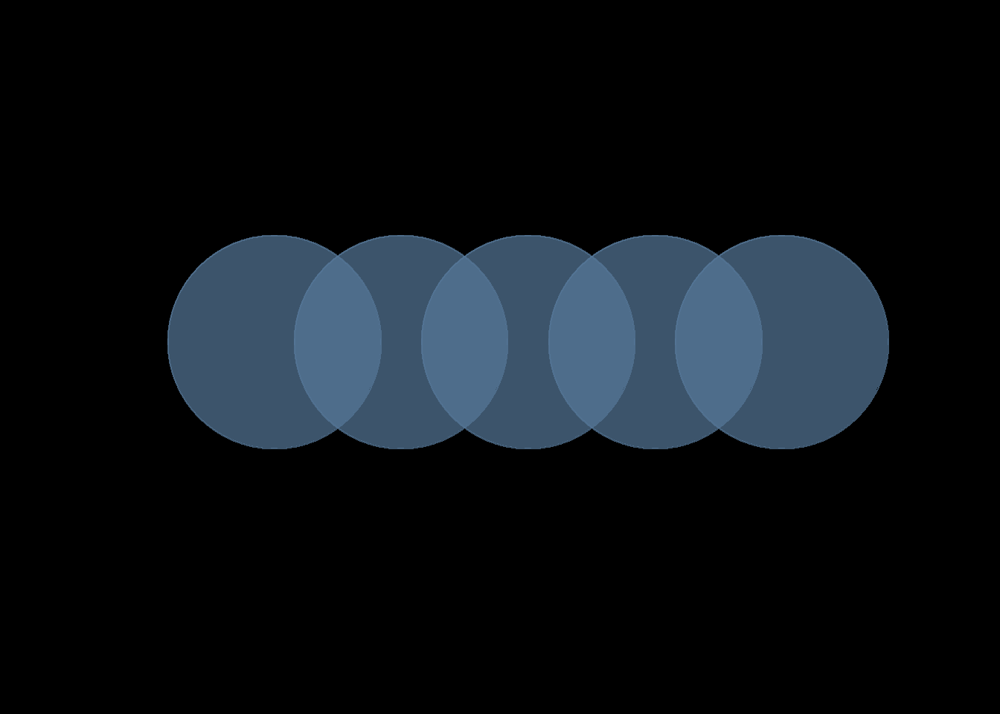
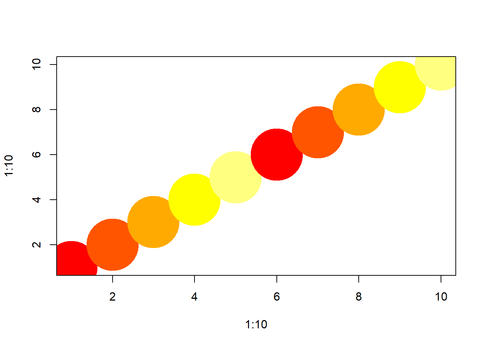
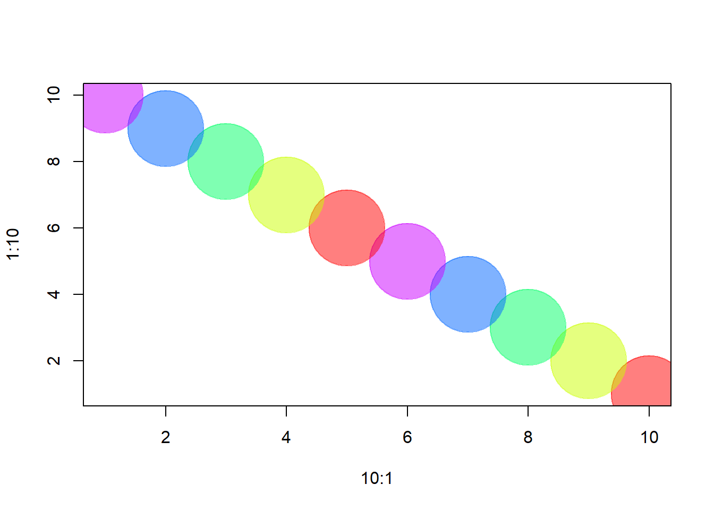
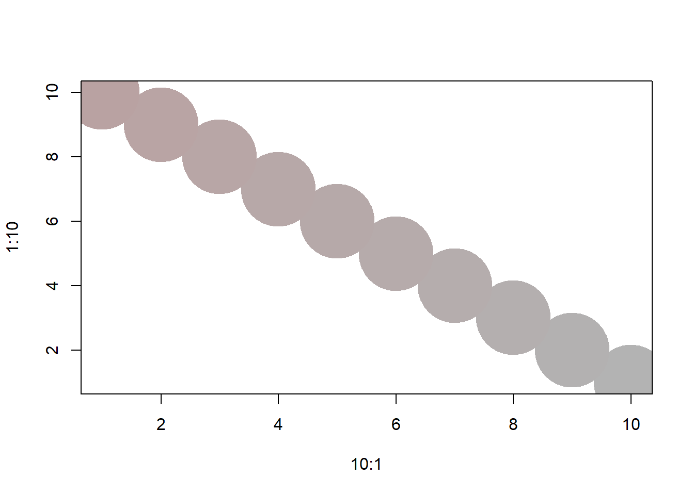
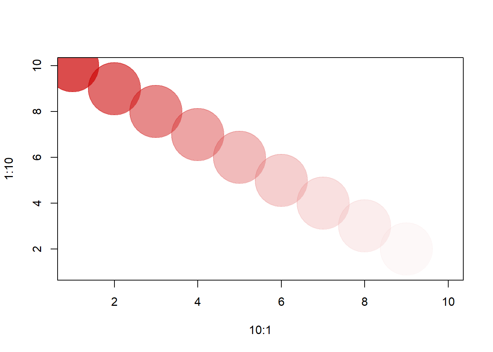
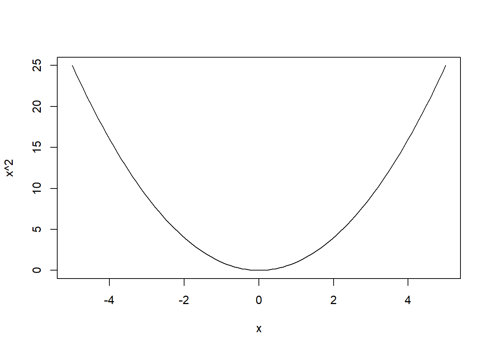
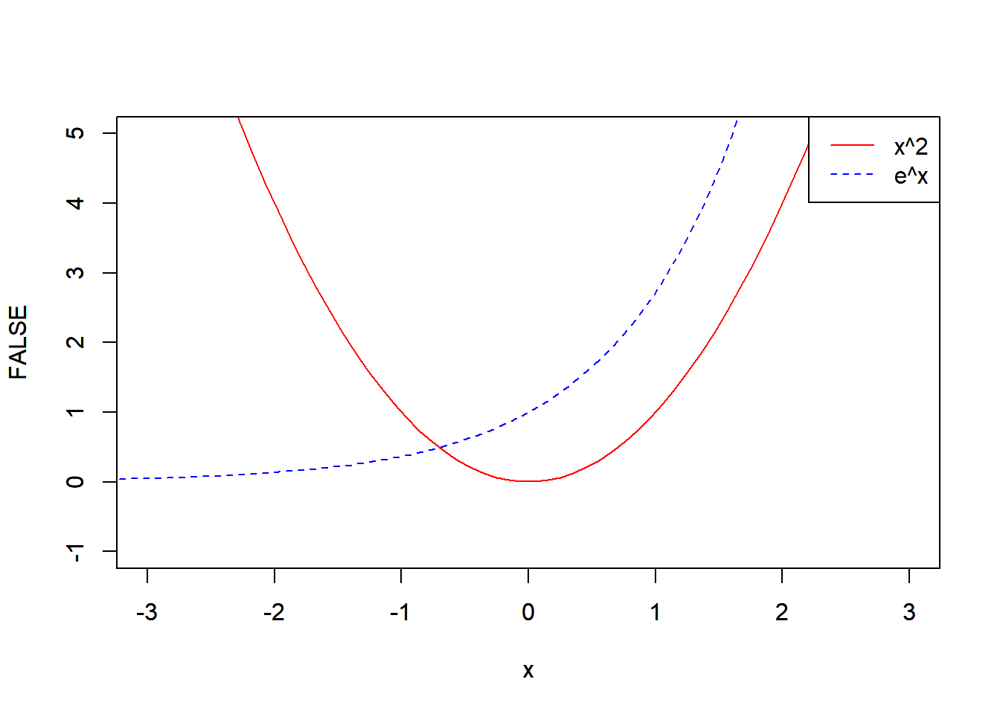
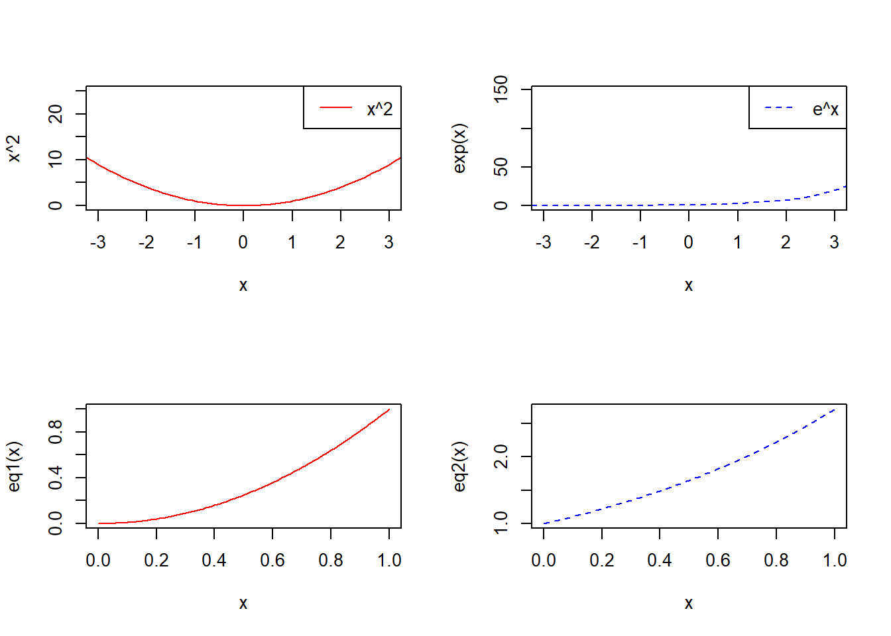

1 Basic Functions in R
1.1 Basic operations
You can assign a value to an object using assign(), “<-”, or “=”.
## [1] 3## [1] 9## [1] 711.2 Value comparisons
Comparisons return boolean values: TRUE or FALSE (often abbreviated to T and F)
## [1] TRUE## [1] FALSE## [1] TRUE1.3 Special constants
NA, NULL, Inf, -Inf, NaN
NA - missing or undefined data
## [1] NA## [1] TRUENULL - an empty object, e.g. a null/empty list
## numeric(0)## [1] TRUEInf and -Inf represent positive and negative infinity They can be returned by mathematical operations like division of a number by zero:
## [1] InfCheck if a number is finite
## [1] FALSENaN (Not a Number) - the result of an operation that cannot be reasonably defined
## [1] NaN## [1] TRUE1.4 Vectors
v1 <- c(1, 5, 11, 33) # Numeric vector, length 4
v2 <- c("hello","world") # Character vector, length 2 (a vector of strings)
v3 <- c(TRUE, TRUE, FALSE) # Logical vector, same as c(T, T, F)Combining different types of elements in one vector will coerce the elements to the least restrictive type:
Other ways to create vectors:
v <- 1:7 # same as c(1,2,3,4,5,6,7)
v <- rep(0, 77) # repeat zero 77 times: v is a vector of 77 zeroes
v <- rep(1:3, times=2) # Repeat 1,2,3 twice
v <- rep(1:10, each=2) # Repeat each element twice
v <- seq(10,20,2) # sequence: numbers between 10 and 20, in jumps of 2
length(v) # check the length of the vector## [1] 6Element-wise operations:
## [1] 2 3 4 5 6Add 1 to each element
## [1] 2 3 4 5 6Multiply each element by 2
## [1] 2 4 6 8 10This doesn’t work: (1,7) is a vector of different length
## Warning in v1 + c(1, 7): longer object length is not a multiple of shorter object length## [1] 2 9 4 11 6Mathematical operations. The sum of all elements.
## [1] 15The average of all elements
## [1] 3The standard deviation
## [1] 1.581139Correlation between v1 and v1*5
## [1] 1Logical operations:
## [1] FALSE FALSE TRUE TRUE TRUE## [1] TRUE FALSE FALSE FALSE FALSE## [1] FALSE TRUE TRUE TRUE TRUE## [1] TRUE TRUE TRUE TRUE TRUE## [1] FALSE FALSE TRUE TRUE TRUE## [1] TRUE## [1] FALSEVector elements
## [1] 3## [1] 2 3 4## [1] 1 3## [1] 1 2## [1] 4 5NOTE: If you are used to languages indexing from 0, R will surprise you by indexing from 1.
To add more elements to a vector, simply assign them values.
We can also directly assign the vector a length:
1.5 Factors
Factors are used to store categorical data.
eye.col.v <- c("brown", "green", "brown", "blue", "blue", "blue") #vector
eye.col.f <- factor(c("brown", "green", "brown", "blue", "blue", "blue")) #factor
eye.col.v## [1] "brown" "green" "brown" "blue" "blue" "blue"## [1] brown green brown blue blue blue
## Levels: blue brown greenR will identify the different levels of the factor - e.g. all distinct values. The data is stored internally as integers - each number corresponding to a factor level.
## [1] "blue" "brown" "green"## [1] 2 3 2 1 1 1## Warning: NAs introduced by coercion## [1] NA NA NA NA NA NAHowever, you can convert it to vector then coerce to numeric.
## [1] 2 3 2 1 1 11.6 Matrices & Arrays
A matrix is a vector with dimensions:
m <- rep(1, 20) # A vector of 20 elements, all 1
dim(m) <- c(5,4) # Dimensions set to 5 & 4, so m is now a 5x4 matrixCreate a matrix using matrix():
m <- matrix(1, nrow=5, ncol=4) # same matrix as above, 5x4, full of 1s
m <- matrix(1,5,4) # same matrix as above
dim(m) # What are the dimensions of m?## [1] 5 4Create a matrix by combining vectors:
m <- cbind(1:5, 5:1, 5:9) # Bind 3 vectors as columns, 5x3 matrix
m <- rbind(1:5, 5:1, 5:9) # Bind 3 vectors as rows, 3x5 matrix
m <- matrix(1:10,10,10)Select matrix elements:
## [1] 2## [1] 2 2 2 2 2 2 2 2 2 2## [1] 1 2 3 4 5 6 7 8 9 10## [,1] [,2] [,3]
## [1,] 1 1 1
## [2,] 2 2 2## [,1] [,2] [,3] [,4] [,5] [,6] [,7] [,8] [,9] [,10]
## [1,] 2 2 2 2 2 2 2 2 2 2
## [2,] 3 3 3 3 3 3 3 3 3 3
## [3,] 4 4 4 4 4 4 4 4 4 4
## [4,] 5 5 5 5 5 5 5 5 5 5
## [5,] 6 6 6 6 6 6 6 6 6 6
## [6,] 7 7 7 7 7 7 7 7 7 7
## [7,] 8 8 8 8 8 8 8 8 8 8
## [8,] 9 9 9 9 9 9 9 9 9 9
## [9,] 10 10 10 10 10 10 10 10 10 10## [1] TRUE FALSE FALSE FALSE FALSE FALSE FALSE FALSE FALSE FALSEIf the matrix is too large, it is impossible to check it one by one, you can do the following to see if all the booleans are TURE.
## [1] TRUE FALSE## [,1] [,2] [,3] [,4] [,5] [,6] [,7] [,8] [,9] [,10]
## [1,] FALSE FALSE FALSE FALSE FALSE FALSE FALSE FALSE FALSE FALSE
## [2,] FALSE FALSE FALSE FALSE FALSE FALSE FALSE FALSE FALSE FALSE
## [3,] FALSE FALSE FALSE FALSE FALSE FALSE FALSE FALSE FALSE FALSE
## [4,] TRUE TRUE TRUE TRUE TRUE TRUE TRUE TRUE TRUE TRUE
## [5,] TRUE TRUE TRUE TRUE TRUE TRUE TRUE TRUE TRUE TRUE
## [6,] TRUE TRUE TRUE TRUE TRUE TRUE TRUE TRUE TRUE TRUE
## [7,] TRUE TRUE TRUE TRUE TRUE TRUE TRUE TRUE TRUE TRUE
## [8,] TRUE TRUE TRUE TRUE TRUE TRUE TRUE TRUE TRUE TRUE
## [9,] TRUE TRUE TRUE TRUE TRUE TRUE TRUE TRUE TRUE TRUE
## [10,] TRUE TRUE TRUE TRUE TRUE TRUE TRUE TRUE TRUE TRUE## [1] 4 5 6 7 8 9 10 4 5 6 7 8 9 10 4 5 6 7 8 9 10 4 5 6 7 8 9 10 4 5 6 7 8 9 10 4 5 6 7 8 9 10 4 5 6 7 8 9
## [49] 10 4 5 6 7 8 9 10 4 5 6 7 8 9 10 4 5 6 7 8 9 10## [,1] [,2] [,3] [,4] [,5] [,6] [,7] [,8] [,9] [,10]
## [1,] 1 2 3 4 5 6 7 8 9 10
## [2,] 1 2 3 4 5 6 7 8 9 10
## [3,] 1 2 3 4 5 6 7 8 9 10
## [4,] 1 2 3 4 5 6 7 8 9 10
## [5,] 1 2 3 4 5 6 7 8 9 10
## [6,] 1 2 3 4 5 6 7 8 9 10
## [7,] 1 2 3 4 5 6 7 8 9 10
## [8,] 1 2 3 4 5 6 7 8 9 10
## [9,] 1 2 3 4 5 6 7 8 9 10
## [10,] 1 2 3 4 5 6 7 8 9 10Careful with the matrix multiplication grammar in R!
## [,1] [,2] [,3] [,4] [,5] [,6] [,7] [,8] [,9] [,10]
## [1,] 385 385 385 385 385 385 385 385 385 385
## [2,] 385 385 385 385 385 385 385 385 385 385
## [3,] 385 385 385 385 385 385 385 385 385 385
## [4,] 385 385 385 385 385 385 385 385 385 385
## [5,] 385 385 385 385 385 385 385 385 385 385
## [6,] 385 385 385 385 385 385 385 385 385 385
## [7,] 385 385 385 385 385 385 385 385 385 385
## [8,] 385 385 385 385 385 385 385 385 385 385
## [9,] 385 385 385 385 385 385 385 385 385 385
## [10,] 385 385 385 385 385 385 385 385 385 385## [,1] [,2] [,3] [,4] [,5] [,6] [,7] [,8] [,9] [,10]
## [1,] 1 4 9 16 25 36 49 64 81 100
## [2,] 1 4 9 16 25 36 49 64 81 100
## [3,] 1 4 9 16 25 36 49 64 81 100
## [4,] 1 4 9 16 25 36 49 64 81 100
## [5,] 1 4 9 16 25 36 49 64 81 100
## [6,] 1 4 9 16 25 36 49 64 81 100
## [7,] 1 4 9 16 25 36 49 64 81 100
## [8,] 1 4 9 16 25 36 49 64 81 100
## [9,] 1 4 9 16 25 36 49 64 81 100
## [10,] 1 4 9 16 25 36 49 64 81 100Arrays: more than 2 dimensions Created with the array() function:
1.7 Lists
Lists are collections of objects (e.g. of strings, vectors, matrices, other lists, etc.)
l1 <- list(boo=v1,foo=v2,moo=v3,zoo="Animals!") # A list with four components
l2 <- list(v1,v2,v3,"Animals!")
l3 <- list()
l4 <- NULL
l1["boo"] # Access boo: this returns a list.## $boo
## [1] 1 2 3 4 5 6 7 8 9 10 NA NA NA NA NA## [1] 1 2 3 4 5 6 7 8 9 10 NA NA NA NA NA## [1] 1 2 3 4 5 6 7 8 9 10 NA NA NA NA NA## [1] 1 2 3 4 5 6 7 8 9 10 NA NA NA NA NAAdd more elements to a list:
l3[[1]] <- 11 # add an element to the empty list l3
l4[[3]] <- c(22, 23) # add a vector as element 3 in the empty list l4.
# Since we added element 3, elements 1 & 2 will be generated and empty (NULL)
l1[[5]] <- "More elements!" # The list l1 had 4 elements, we're adding a 5th here.
l1[[8]] <- 1:11 # We added an 8th element, but not 6th or 7th. Those will be created empty (NULL)
l1$Something <- "A thing" # Adds a ninth element - "A thing", named "Something"1.8 Data Frames
The data frame is a special kind of list used for storing dataset tables. Think of rows as cases, columns as variables. Each column is a vector or factor.
Creating a dataframe:
dfr1 <- data.frame( ID=1:4,
FirstName=c("John","Jim","Jane","Jill"),
Female=c(F,F,T,T),
Age=c(22,33,44,55) )
dfr1$FirstName # Access the second column of dfr1. ## [1] "John" "Jim" "Jane" "Jill"Notice that R thinks this is a categorical variable and so it’s treating it like a factor, not a character vector. Let’s get rid of the factor by telling R to treat FirstName as a vector:
Alternatively, you can tell R you don’t like factors from the start using stringsAsFactors=FALSE
dfr2 <- data.frame(FirstName=c("John","Jim","Jane","Jill"), stringsAsFactors=FALSE)
dfr2$FirstName # Success: not a factor.## [1] "John" "Jim" "Jane" "Jill"Access elements of the data frame
## ID FirstName Female Age
## 1 1 John FALSE 22## [1] 1 2 3 4## [1] 22 33 44 55## Female Age
## 1 FALSE 22
## 2 FALSE 33## ID FirstName Female Age
## 1 1 John FALSE 22
## 3 3 Jane TRUE 44Find the names of everyone over the age of 30 in the data
## [1] "Jim" "Jane" "Jill"Find the average age of all females in the data:
## [1] 49.51.9 Flow Control
if (condition) expr1 else expr2
x <- 5
y <- 10
if (x==0) { #if x equals 0, then let y be 0
y <- 0
} else {
y <- y/x #otherwise, let y be y/x
}
y## [1] 2for (variable in sequence) expr
ASum <- 0; AProd <- 1
for (i in 1:x)
{
ASum <- ASum + i #cumulative sum
AProd <- AProd * i #cumulative product
}
ASum # equivalent to sum(1:x)## [1] 15## [1] 120while (condintion) expr
## [1] 5
## [1] 4
## [1] 3
## [1] 2
## [1] 1Let a=c(1, 1, 1, 2, 1, 4, 6, 8, 9, 7, 3, 10, 3, 10). Split the vector a into two vectors b and c with equal sum.
a=c(1, 1, 1, 2, 1, 4, 6, 8, 9, 7, 3, 10, 3, 10)
for (i in 1:length(a)){
if (sum(a[1:i])==sum(a[(i+1):length(a)])){ #check if the sum of the first i elements equals the sum of the rest
b=a[1:i] #if yes, then define b and c
c=a[(i+1):length(a)]
break #once you found it, you are done, no need to check more
}
}
b #print b and c## [1] 1 1 1 2 1 4 6 8 9## [1] 7 3 10 3 10Determine the set of integers between 2 to n such that the integer is the square of some other smaller numbers. \(n=200\). This problem can be down in many different ways, and I did it the way to show the usage of double loop together with if statement.
n=200
sq_set=c()
for (i in 2:n){
for (j in 2:sqrt(n)){
if (i==(j^2)){ #check if i equals the squre of j
sq_set=c(sq_set,i) #if yes, then add i into the set
}
}
}
sq_set #print sq_set## [1] 4 9 16 25 36 49 64 81 100 121 144 169 1961.10 R plots and colors
In most R functions, you can use named colors, hex, or rgb values: (In the simple base plot chart below x and y are point coordiantes, pch is the point symbol shape, cex is the point size, and col is the color. to see the parameters for ploting in base R, check out ?par
plot(x=1:10, y=rep(5,10), pch=19, cex=5, col="dark red")
points(x=1:10, y=rep(6, 10), pch=19, cex=5, col="#557799")
points(x=1:10, y=rep(4, 10), pch=19, cex=5, col=rgb(.25, .5, .3))
You may notice that rgb here ranges from 0 to 1. While this is the R default, you can also set it for the 0-255 range:
## [1] "#0A6464"We can also set the opacity/transparency using the parameter ‘alpha’ (range 0-1):
 If we have a hex color representation, we can set the transparency alpha using ‘adjustcolor’ from package ‘grDevices’. For fun, let’s also set the the plot background to gray using the par() function for graphical parameters.
par(bg="black")
col.tr <- grDevices::adjustcolor("#557799", alpha=0.7)
plot(x=1:5, y=rep(5,5), pch=19, cex=20, col=col.tr, xlim=c(0,6)) 
If you plan on using the built-in color names, here’s what they are:
## [1] "white" "aliceblue" "antiquewhite" "antiquewhite1" "antiquewhite2" "antiquewhite3"
## [7] "antiquewhite4" "aquamarine" "aquamarine1" "aquamarine2" "aquamarine3" "aquamarine4"
## [13] "azure" "azure1" "azure2" "azure3" "azure4" "beige"
## [19] "bisque" "bisque1" "bisque2" "bisque3" "bisque4" "black"
## [25] "blanchedalmond" "blue" "blue1" "blue2" "blue3" "blue4"
## [31] "blueviolet" "brown" "brown1" "brown2" "brown3" "brown4"
## [37] "burlywood" "burlywood1" "burlywood2" "burlywood3" "burlywood4" "cadetblue"
## [43] "cadetblue1" "cadetblue2" "cadetblue3" "cadetblue4" "chartreuse" "chartreuse1"
## [49] "chartreuse2" "chartreuse3" "chartreuse4" "chocolate" "chocolate1" "chocolate2"
## [55] "chocolate3" "chocolate4" "coral" "coral1" "coral2" "coral3"
## [61] "coral4" "cornflowerblue" "cornsilk" "cornsilk1" "cornsilk2" "cornsilk3"
## [67] "cornsilk4" "cyan" "cyan1" "cyan2" "cyan3" "cyan4"
## [73] "darkblue" "darkcyan" "darkgoldenrod" "darkgoldenrod1" "darkgoldenrod2" "darkgoldenrod3"
## [79] "darkgoldenrod4" "darkgray" "darkgreen" "darkgrey" "darkkhaki" "darkmagenta"
## [85] "darkolivegreen" "darkolivegreen1" "darkolivegreen2" "darkolivegreen3" "darkolivegreen4" "darkorange"
## [91] "darkorange1" "darkorange2" "darkorange3" "darkorange4" "darkorchid" "darkorchid1"
## [97] "darkorchid2" "darkorchid3" "darkorchid4" "darkred" "darksalmon" "darkseagreen"
## [103] "darkseagreen1" "darkseagreen2" "darkseagreen3" "darkseagreen4" "darkslateblue" "darkslategray"
## [109] "darkslategray1" "darkslategray2" "darkslategray3" "darkslategray4" "darkslategrey" "darkturquoise"
## [115] "darkviolet" "deeppink" "deeppink1" "deeppink2" "deeppink3" "deeppink4"
## [121] "deepskyblue" "deepskyblue1" "deepskyblue2" "deepskyblue3" "deepskyblue4" "dimgray"
## [127] "dimgrey" "dodgerblue" "dodgerblue1" "dodgerblue2" "dodgerblue3" "dodgerblue4"
## [133] "firebrick" "firebrick1" "firebrick2" "firebrick3" "firebrick4" "floralwhite"
## [139] "forestgreen" "gainsboro" "ghostwhite" "gold" "gold1" "gold2"
## [145] "gold3" "gold4" "goldenrod" "goldenrod1" "goldenrod2" "goldenrod3"
## [151] "goldenrod4" "gray" "gray0" "gray1" "gray2" "gray3"
## [157] "gray4" "gray5" "gray6" "gray7" "gray8" "gray9"
## [163] "gray10" "gray11" "gray12" "gray13" "gray14" "gray15"
## [169] "gray16" "gray17" "gray18" "gray19" "gray20" "gray21"
## [175] "gray22" "gray23" "gray24" "gray25" "gray26" "gray27"
## [181] "gray28" "gray29" "gray30" "gray31" "gray32" "gray33"
## [187] "gray34" "gray35" "gray36" "gray37" "gray38" "gray39"
## [193] "gray40" "gray41" "gray42" "gray43" "gray44" "gray45"
## [199] "gray46" "gray47" "gray48" "gray49" "gray50" "gray51"
## [205] "gray52" "gray53" "gray54" "gray55" "gray56" "gray57"
## [211] "gray58" "gray59" "gray60" "gray61" "gray62" "gray63"
## [217] "gray64" "gray65" "gray66" "gray67" "gray68" "gray69"
## [223] "gray70" "gray71" "gray72" "gray73" "gray74" "gray75"
## [229] "gray76" "gray77" "gray78" "gray79" "gray80" "gray81"
## [235] "gray82" "gray83" "gray84" "gray85" "gray86" "gray87"
## [241] "gray88" "gray89" "gray90" "gray91" "gray92" "gray93"
## [247] "gray94" "gray95" "gray96" "gray97" "gray98" "gray99"
## [253] "gray100" "green" "green1" "green2" "green3" "green4"
## [259] "greenyellow" "grey" "grey0" "grey1" "grey2" "grey3"
## [265] "grey4" "grey5" "grey6" "grey7" "grey8" "grey9"
## [271] "grey10" "grey11" "grey12" "grey13" "grey14" "grey15"
## [277] "grey16" "grey17" "grey18" "grey19" "grey20" "grey21"
## [283] "grey22" "grey23" "grey24" "grey25" "grey26" "grey27"
## [289] "grey28" "grey29" "grey30" "grey31" "grey32" "grey33"
## [295] "grey34" "grey35" "grey36" "grey37" "grey38" "grey39"
## [301] "grey40" "grey41" "grey42" "grey43" "grey44" "grey45"
## [307] "grey46" "grey47" "grey48" "grey49" "grey50" "grey51"
## [313] "grey52" "grey53" "grey54" "grey55" "grey56" "grey57"
## [319] "grey58" "grey59" "grey60" "grey61" "grey62" "grey63"
## [325] "grey64" "grey65" "grey66" "grey67" "grey68" "grey69"
## [331] "grey70" "grey71" "grey72" "grey73" "grey74" "grey75"
## [337] "grey76" "grey77" "grey78" "grey79" "grey80" "grey81"
## [343] "grey82" "grey83" "grey84" "grey85" "grey86" "grey87"
## [349] "grey88" "grey89" "grey90" "grey91" "grey92" "grey93"
## [355] "grey94" "grey95" "grey96" "grey97" "grey98" "grey99"
## [361] "grey100" "honeydew" "honeydew1" "honeydew2" "honeydew3" "honeydew4"
## [367] "hotpink" "hotpink1" "hotpink2" "hotpink3" "hotpink4" "indianred"
## [373] "indianred1" "indianred2" "indianred3" "indianred4" "ivory" "ivory1"
## [379] "ivory2" "ivory3" "ivory4" "khaki" "khaki1" "khaki2"
## [385] "khaki3" "khaki4" "lavender" "lavenderblush" "lavenderblush1" "lavenderblush2"
## [391] "lavenderblush3" "lavenderblush4" "lawngreen" "lemonchiffon" "lemonchiffon1" "lemonchiffon2"
## [397] "lemonchiffon3" "lemonchiffon4" "lightblue" "lightblue1" "lightblue2" "lightblue3"
## [403] "lightblue4" "lightcoral" "lightcyan" "lightcyan1" "lightcyan2" "lightcyan3"
## [409] "lightcyan4" "lightgoldenrod" "lightgoldenrod1" "lightgoldenrod2" "lightgoldenrod3" "lightgoldenrod4"
## [415] "lightgoldenrodyellow" "lightgray" "lightgreen" "lightgrey" "lightpink" "lightpink1"
## [421] "lightpink2" "lightpink3" "lightpink4" "lightsalmon" "lightsalmon1" "lightsalmon2"
## [427] "lightsalmon3" "lightsalmon4" "lightseagreen" "lightskyblue" "lightskyblue1" "lightskyblue2"
## [433] "lightskyblue3" "lightskyblue4" "lightslateblue" "lightslategray" "lightslategrey" "lightsteelblue"
## [439] "lightsteelblue1" "lightsteelblue2" "lightsteelblue3" "lightsteelblue4" "lightyellow" "lightyellow1"
## [445] "lightyellow2" "lightyellow3" "lightyellow4" "limegreen" "linen" "magenta"
## [451] "magenta1" "magenta2" "magenta3" "magenta4" "maroon" "maroon1"
## [457] "maroon2" "maroon3" "maroon4" "mediumaquamarine" "mediumblue" "mediumorchid"
## [463] "mediumorchid1" "mediumorchid2" "mediumorchid3" "mediumorchid4" "mediumpurple" "mediumpurple1"
## [469] "mediumpurple2" "mediumpurple3" "mediumpurple4" "mediumseagreen" "mediumslateblue" "mediumspringgreen"
## [475] "mediumturquoise" "mediumvioletred" "midnightblue" "mintcream" "mistyrose" "mistyrose1"
## [481] "mistyrose2" "mistyrose3" "mistyrose4" "moccasin" "navajowhite" "navajowhite1"
## [487] "navajowhite2" "navajowhite3" "navajowhite4" "navy" "navyblue" "oldlace"
## [493] "olivedrab" "olivedrab1" "olivedrab2" "olivedrab3" "olivedrab4" "orange"
## [499] "orange1" "orange2" "orange3" "orange4" "orangered" "orangered1"
## [505] "orangered2" "orangered3" "orangered4" "orchid" "orchid1" "orchid2"
## [511] "orchid3" "orchid4" "palegoldenrod" "palegreen" "palegreen1" "palegreen2"
## [517] "palegreen3" "palegreen4" "paleturquoise" "paleturquoise1" "paleturquoise2" "paleturquoise3"
## [523] "paleturquoise4" "palevioletred" "palevioletred1" "palevioletred2" "palevioletred3" "palevioletred4"
## [529] "papayawhip" "peachpuff" "peachpuff1" "peachpuff2" "peachpuff3" "peachpuff4"
## [535] "peru" "pink" "pink1" "pink2" "pink3" "pink4"
## [541] "plum" "plum1" "plum2" "plum3" "plum4" "powderblue"
## [547] "purple" "purple1" "purple2" "purple3" "purple4" "red"
## [553] "red1" "red2" "red3" "red4" "rosybrown" "rosybrown1"
## [559] "rosybrown2" "rosybrown3" "rosybrown4" "royalblue" "royalblue1" "royalblue2"
## [565] "royalblue3" "royalblue4" "saddlebrown" "salmon" "salmon1" "salmon2"
## [571] "salmon3" "salmon4" "sandybrown" "seagreen" "seagreen1" "seagreen2"
## [577] "seagreen3" "seagreen4" "seashell" "seashell1" "seashell2" "seashell3"
## [583] "seashell4" "sienna" "sienna1" "sienna2" "sienna3" "sienna4"
## [589] "skyblue" "skyblue1" "skyblue2" "skyblue3" "skyblue4" "slateblue"
## [595] "slateblue1" "slateblue2" "slateblue3" "slateblue4" "slategray" "slategray1"
## [601] "slategray2" "slategray3" "slategray4" "slategrey" "snow" "snow1"
## [607] "snow2" "snow3" "snow4" "springgreen" "springgreen1" "springgreen2"
## [613] "springgreen3" "springgreen4" "steelblue" "steelblue1" "steelblue2" "steelblue3"
## [619] "steelblue4" "tan" "tan1" "tan2" "tan3" "tan4"
## [625] "thistle" "thistle1" "thistle2" "thistle3" "thistle4" "tomato"
## [631] "tomato1" "tomato2" "tomato3" "tomato4" "turquoise" "turquoise1"
## [637] "turquoise2" "turquoise3" "turquoise4" "violet" "violetred" "violetred1"
## [643] "violetred2" "violetred3" "violetred4" "wheat" "wheat1" "wheat2"
## [649] "wheat3" "wheat4" "whitesmoke" "yellow" "yellow1" "yellow2"
## [655] "yellow3" "yellow4" "yellowgreen"## [1] "aliceblue" "blue" "blue1" "blue2" "blue3" "blue4" "blueviolet" "cadetblue"
## [9] "cadetblue1" "cadetblue2" "cadetblue3" "cadetblue4" "cornflowerblue" "darkblue" "darkslateblue" "deepskyblue"
## [17] "deepskyblue1" "deepskyblue2" "deepskyblue3" "deepskyblue4" "dodgerblue" "dodgerblue1" "dodgerblue2" "dodgerblue3"
## [25] "dodgerblue4" "lightblue" "lightblue1" "lightblue2" "lightblue3" "lightblue4" "lightskyblue" "lightskyblue1"
## [33] "lightskyblue2" "lightskyblue3" "lightskyblue4" "lightslateblue" "lightsteelblue" "lightsteelblue1" "lightsteelblue2" "lightsteelblue3"
## [41] "lightsteelblue4" "mediumblue" "mediumslateblue" "midnightblue" "navyblue" "powderblue" "royalblue" "royalblue1"
## [49] "royalblue2" "royalblue3" "royalblue4" "skyblue" "skyblue1" "skyblue2" "skyblue3" "skyblue4"
## [57] "slateblue" "slateblue1" "slateblue2" "slateblue3" "slateblue4" "steelblue" "steelblue1" "steelblue2"
## [65] "steelblue3" "steelblue4"In many cases, we need a number of contrasting colors, or multiple shades of a color. R comes with some predefined palette function that can generate those for us.
pal1 <- heat.colors(5, alpha=1) # generate 5 colors from the heat palette, opaque
pal2 <- rainbow(5, alpha=.5) # generate 5 colors from the heat palette, semi-transparent
plot(x=1:10, y=1:10, pch=19, cex=10, col=pal1)
 We can also generate our own gradients using colorRampPalette. Note that colorRampPalette returns a function that we can use to generate as many colors from that palette as we need.

To add transparency to colorRampPalette, you need to add a parameter alpha=TRUE:
palf <- colorRampPalette(c(rgb(1,1,1, .2),rgb(.8,0,0, .7)), alpha=TRUE)
plot(x=10:1, y=1:10, pch=19, cex=10, col=palf(10))  ## R plot functions
There are several ways to plot a function in R. If you use the plot function, you need to first define the x coordinates. The plot function connects the coordinates by line segments. So the more coordinates, the smoother the curve looks.
x=seq(-5,5,length.out = 100) #generate a sequence between -5 and 5 with length 100
plot(x,x^2,type="l", pch=19) To plot two functions in one figure, you need a function to hold the figure. An important parameter you need to set is the xlim and ylim, so the two plots have the same x and y range. You can try dropping these parameters. You may also distinguish the two function by colors or line type, and add a legend.
x=seq(-5,5,length.out = 100)
plot(x,x^2,col="red",type="l", lty=1, pch=19,xlim=c(-3,3),ylim=c(-1,5),ylab=F)
par(new=TRUE)
plot(x,exp(x),col="blue",type="l",lty=2, pch=19,xlim=c(-3,3),ylim=c(-1,5),ylab=F)
legend("topright",legend=c("x^2","e^x"),col=c("red","blue"),lty=1:2)
## RStudioGD
## 2Multiple plots in one window.
x=seq(-5,5,length.out = 100)
par(mfrow=c(2,2)) # two rows, two columns
plot(x,x^2,col="red",type="l", lty=1, pch=19,xlim=c(-3,3)) # you can drop ylim now
legend("topright",legend=c("x^2"),col="red",lty=1)
plot(x,exp(x),col="blue",type="l",lty=2, pch=19,xlim=c(-3,3)) # you can drop ylim now
legend("topright",legend="e^x",col="blue",lty=2)
eq1=function(x){x^2}
curve(eq1,col="red",lty=1)
eq2 = function(x){exp(x)}
curve(eq2,col="blue",lty=2)
## RStudioGD
## 21.11 R troubleshooting
While I generate many (and often very creative) errors in R, there are three simple things that will most often go wrong for me. Those include:
Capitalization. R is case sensitive - a graph vertex named “Jack” is not the same as one named “jack”. The function “rowSums” won’t work as “rowsums” or “RowSums”.
Object class. While many functions are willing to take anything you throw at them, some will still surprisingly require character vector or a factor instead of a numeric vector, or a matrix instead of a data frame. Functions will also occasionally return results in an unexpected formats.
Package namespaces. Occasionally problems will arise when different packages contain functions with the same name. R may warn you about this by saying something like “The following object(s) are masked from ‘package:igraph’” as you load a package. One way to deal with this is to call functions from a package explicitly using ‘::’. For instance, if function ‘blah’ is present in packages A and B, you can call A::blah and B::blah. In other cases the problem is more complicated, and you may have to load packages in certain order, or not use them together at all. For example (and pertinent to this workshop), igraph and statnet packages cause some problems when loaded at the same time. It is best to detach one before loading the other.
For more advanced troubleshooting, check out try(), tryCatch(), and debug().
1.12 Homework 1 - part 1
Create two 2x3 matrix the way you like and add, subtract, multiply and divide the matrices. Combine these two matrices side by side to create a 2x6 matrix.
Create a 4x4 matrix with integers unfiformly distributed in [1, 10]. Access the elements at the 3rd column. Access the elements at the 2nd row. Extract the submatrix whose rows have a value > 8 from this matrix. Find row and column index of maximum and minimum value in this matrix.
Create a data frame from four vectors with the names id, cancer type, age, age of onset. Fill the data frame with 5 imaginary patients. Subtract age of onset from age to compute the years since onset using column names. Reorder the rows of this data frame by age.
Create a list containing string, numbers, a matrix, and give names to the elements in the list. Create a list containing logical values. Merge these two lists, then add a new element you like as the 5th element in the list.
Create two vectors of 50 numbers which are normally distributed with mean=1, standard deviation=1, call them x1, y1. Create two vectors of 50 numbers which are normally distributed with mean=2, standard deviation=1, call them x2, y2. Plot the 100 dots (x1,y1), (x2,y2) in the same plot. Color the dots in (x1,y1) by red, (x2,y2) by blue, set the transparency of the dots to 0.3.
Plot two functions \(f(x)=e^x\) and \(g(x)=sin(x)\) together in one plot. Set the correct range of x and y axis. Add a legend to indicate which is which.
Determine the total number of integers between 2 to n such that the integer is the cubic of some other smaller numbers. \(n=200\).
## [1] 4A self-dividing number is a number that is divisible by every digit it contains. For example, 128 is a self-dividing number because (128 %% 1)==0 and (128 %% 2)==0 and (128 %% 8)==0. Find all the self-dividing numbers between 10 to 50.
(bonus) Generate 6 random dots in the xy-plane. Return the area of the largest triangle that can be formed by any 3 of the points. Plot the dots and color the triangle.